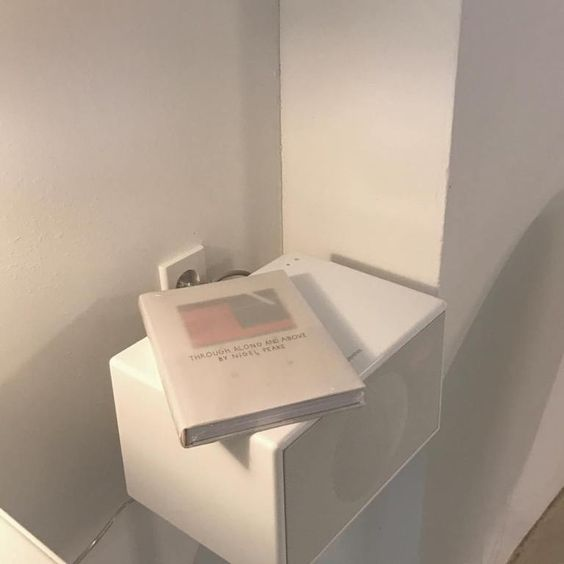
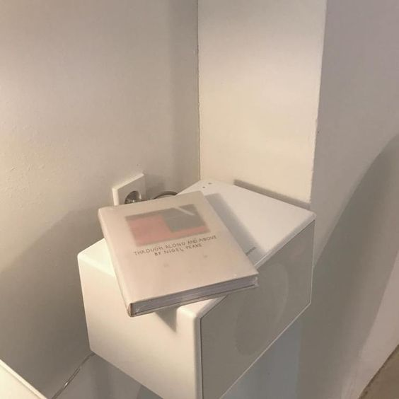

Birman Cat
The Birman is a cat of distinction as well as legend. With their exotic ancestry, luxurious pointed coats, “white gloved” paws and mesmerizing blue eyes, this is a breed with undeniable charisma. The Birman’s sweet and gentle nature makes her an ideal companion and pet. Birmans are playful and love to be with people, and are also patient and social with children and other pets.
While Birmans tend to be fairly quiet, they will “talk” with soft, chirping voices. They enjoy attention, and want to be where their people are, helping with whatever activity is happening.
This healthy, long-lived breed has an outstanding, semi-long silky coat and a luxurious, long bottle-brush tail. Brilliant blue, almost-round eyes are prominent features of her sweet expression.
The Norwegian Forest Cat
The Norwegian Forest Cat is a gentle giant. They’re large and athletic, so you may find them sitting atop the highest point in your home, and they have no qualms about jumping down. Norwegian Forest Cats are fond of their family but are reserved with visitors. As a laid-back and independent breed, they don’t demand constant attention. Norwegian Forest Cats are content to simply sit in the same room with their humans and will happily entertain themselves while alone. These felines are moderately active, enjoying spurts of activity followed by long cat naps, and are happy to play in water. They get along with other dogs and cats, as well as mild-mannered children.
Their most distinguishing characteristic is their long, thick coat and large size. The Norwegian Forest Cat’s head is shaped like an inverted triangle, topped with heavily tufted medium-to-large ears. Large, almond-shaped eyes vary in color from stunning green to gold and copper. They have a large chest, muscular thighs, round paws, and a long, bushy tail.
Chartreux Cat
Often called the smiling cat of France, the Chartreux has a sweet, smiling expression. This sturdy, powerful cat has a distinctive blue coat with a resilient wooly undercoat. Historically known as fine mousers with strong hunting instincts, the Chartreux enjoys toys that move. This is a slow-maturing breed that reaches adulthood in three to five years. A loving, gentle companion, the Chartreux forms a close bond with her family.
there was no characteristics to this cat but I think its characteristics are really cool
The British Shorthair Cat
The British Shorthair is an easygoing feline. She enjoys affection but isn’t needy and dislikes being carried. She’ll follow you from room to room, though, out of curiosity. British Shorthairs aren’t lap cats, but they do enjoy snuggling next to their people on the couch. As they age, British Shorthairs become increasingly sedentary, however males are often more rambunctious than the reserved females. They get along well with gentle and respectful children and don’t mind cat-friendly dogs.
British Shorthairs are round all over, with a broad chest and strong legs. Their coats are short, thick and plush. Eye color depends on coat color, but you can expect British Blues to have gold eyes and those with point coloring to have blue eyes. Other eye colors range from golden to copper.
The Himalayan Cat
The Himalayan Cat is a sweet and mild-tempered feline. She’s affectionate but selective. Although she loves lying in your lap and being pet, she may be reserved around guests. Serene, quiet environments with few day-to-day changes are best for the Himmie. She’s content staying home alone and won’t climb your curtains or jump on your counters. That doesn’t mean she doesn’t enjoy playtime, though, with toy mice or even a ball of crumpled paper.
Aside from her colorpoint and eye color, she resembles the Persian in nearly every other way. Himalayans have a large, round head with wide-set, round eyes, a short nose and full cheeks. Her face is topped with small, round-tipped ears. Himalayans are not fat cats, but instead have a sturdy, muscular body with a thick neck and short, strong legs.
 
